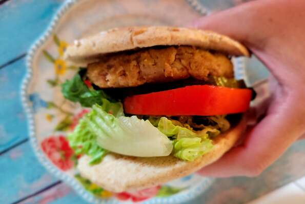

Tasty Tuna Patties

This simple, tasty recipe is delicious !
If you're ever pressed for time, start with a couple cans of tuna and you'll have a delicious patty in no time that you can serve a number of different ways. Add them to buns with your favorite toppings for sandwiches, serve them alongside a fresh salad, or make smaller versions of them and serve them as appetizers with tartar sauce on the side. There are a lot of great flavor elements in these easy and versatile patties, but the quantities are small so the flavor still comes out pretty mild. If you're looking for a stronger flavor, increase quantities as you like!
Ingredients
- 2 (5 ounce) cans tuna in water, drained
- 2 large eggs
- ¾ cup dry bread crumbs
- 1 ½ tablespoons grated Parmesan cheese
- 1 ½ tablespoons finely diced celery
- ½ teaspoon lemon juice
- ½ teaspoon seafood seasoning (such as Old Bay®)
- ½ teaspoon Dijon mustard
- ⅛ teaspoon ground black pepper
- ⅛ teaspoon dried dill weed
- 1 tablespoon oil, divided, or as needed
Steps
- Combine tuna, eggs, bread crumbs, Parmesan cheese, celery, lemon juice,
seafood seasoning, mustard, pepper, and dill in a bowl; stir gently until
fully and evenly combined. Shape mixture into 4 patties.
- Heat oil in a nonstick skillet over medium-high heat.
When oil is hot, gently lay 2 tuna patties into the skillet.
Don't over crowd - only add as many patties as comfortably
fit with room to flip them.
- Cook tuna patties until golden brown, 3 to 5 minutes per side,
adjusting the heat as needed if they're cooking too quickly.
Repeat with remaining patties, adding remaining oil as needed.